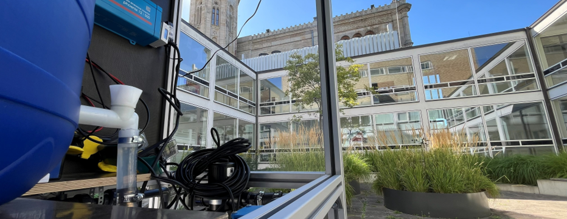

Innovative, AI-based rainwater harvesting for a sustainable and climate-resilient courtyard. Four intelligently networked cisterns and a modern treatment unit enable the efficient storage, control, and use of rainwater.

As part of a forward-looking blue-green infrastructure initiative, a state-of-the-art rainwater management system was developed. Intelligent sensors and AI-powered controls analyze and optimize water flows. The system contributes to climate adaptation, resource conservation, and the sustainable management of urban spaces..
Smart Rainwater Storage and Distribution for Maximum Water Availability.
Data-driven optimization of water flows and automated control of the entire system.
Modern purification technology for customized, quality-assured rainwater harvesting solutions.
Contribution to Blue-Green Urban Development and the Resilient Design of Urban Courtyards.